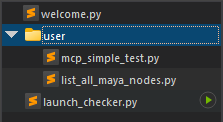

File Explorer
Overview
The file explorer displays the project directory structure and makes file management easy.

Features
Directory Tree Operations
The file explorer displays the project root directory.

New directories can be created from the
New Folder option in the right-click
menu.
You can also move files using drag and drop.
The following operations are available from the right-click menu:
| Operation | Description |
|---|---|
| Open | Opens the selected file in the editor. |
| New Python File | Creates a new Python file in the selected directory. |
| New Folder | Creates a new folder in the selected directory. |
| Copy | Copies the selected file or folder. |
| Cut | Cuts the selected file or folder. |
| Paste | Pastes the copied or cut file or folder. |
| Rename | Renames the selected file or folder. |
| Delete | Deletes the selected file or folder. |
| Refresh | Refreshes the directory tree. |
Opening Files in Tabs
Clicking a file in the explorer opens it in a new
editor tab.
Single-clicking opens it in a preview tab, while
double-clicking opens it in a persistent tab.
Preview tabs allow you to preview multiple files sequentially in a single tab.
Preview Tab

Persistent Tab

Run Without Opening
Hovering over a Python file in the explorer displays
a Run button on the right side.

Clicking the Run button executes the
file directly without opening it in the editor.
Keyboard Shortcuts
The following keyboard shortcuts are available in the file explorer:
| Operation | Shortcut |
|---|---|
| Copy | Ctrl+C |
| Cut | Ctrl+X |
| Paste | Ctrl+V |
| Rename | F2 |